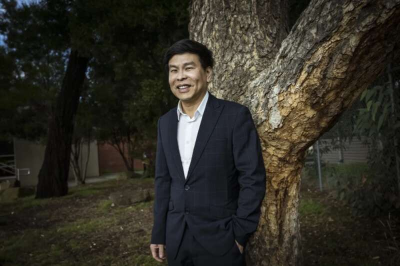
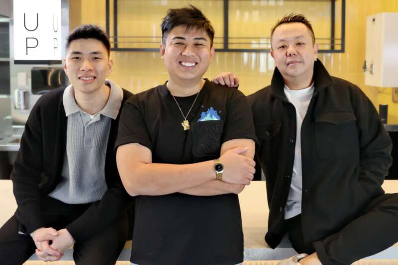
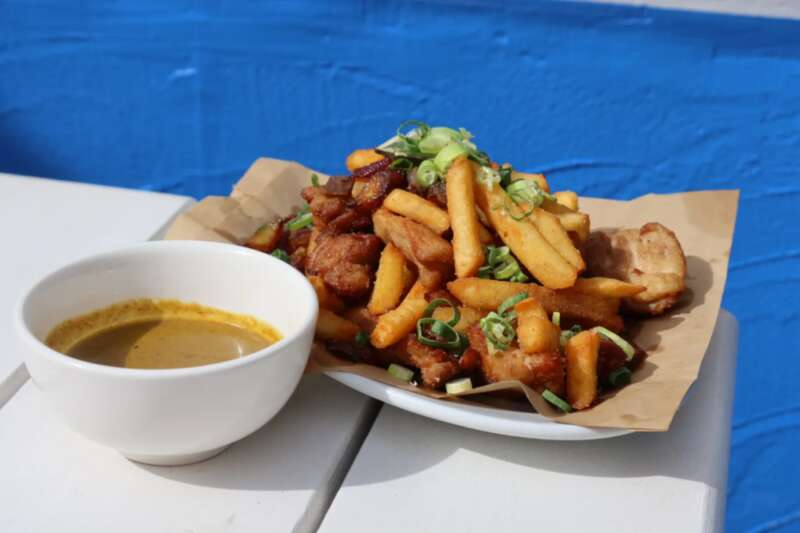
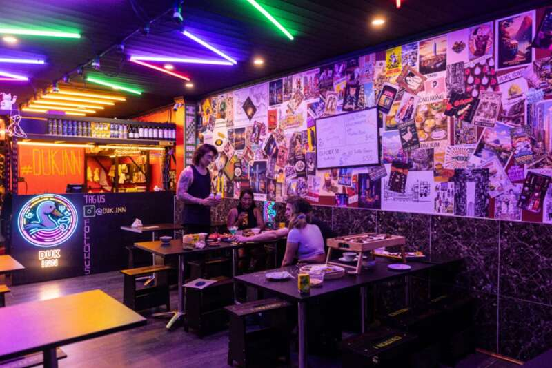
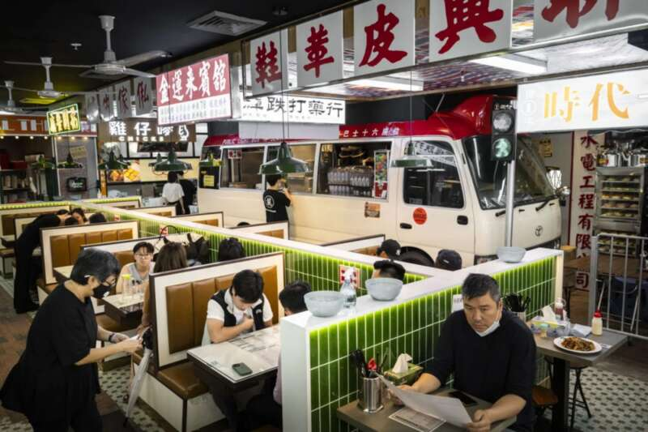

近期悉尼不少中餐厅接连倒闭，
曾经一铺难求的唐人街，
也变得冷清，
但这些店铺却在逐渐兴起。
#01：
多家知名中餐厅接连倒闭
迎来行业寒冬
作为曾经澳洲最大的悉尼China town，各种美食云集，物美价廉，深受当地人和游客的喜爱，其商铺更是一铺难求，高昂的租金也挡不住超高客流量的诱惑。
图片来源：en.wikipedia.org
然而受到疫情冲击，人流量的断崖式下降，仍旧高昂的租金使得大量的中餐馆陷入寒冬，作为悉尼标志的唐人街也进入艰难时期。
据统计，在过去的18个月里，已有近50家中餐厅歇业倒闭。其中包括不少在华人圈里爆火过的餐厅。
2020年8月，拥有40年营业历史的BBQ King倒闭。
一年后，有39年历史的Marigold Chinese Restaurant也紧随其后歇业。
备受厨师欢迎的Golden Century也进入了自愿管理。
去年营业了30年的Zilver restaurant也在Haymarket关门，其大楼已被规划为重建项目。
Chatswoo的King Dynas、Chao KongChinese Restaurant以及Canton Village都陆续宣布停业。Lotus目前也结束堂食服务，转向仅外卖，进入“半关闭“状态。
不少网友唏嘘，在悉尼干餐饮真难啊。
#02：
打破旧模式
谋求新出路
尽管如此，尼华人区商会主席Wayne Tseng却说，他相信目前店主们正在逐渐适应。
“中端市场的餐厅正变得越来越聪明，它们减少了菜单上的菜品数量。
每个行业都必须发展。有时这意味着摆脱旧模式的束缚。
”

图片来源：smh.com.au
他举了一个例子，是将在8月8日在悉尼CBD的Grosvenor Place开业的Yum Cha Project餐厅。这家餐厅为凸显自身的差异性，将把外卖饺子放在披萨和汉堡盒中，以及开创北京烤鸭披萨作为新菜品。
Yum Cha Project店主也回应，
“我不希望这里成为另一家豪华的悉尼中餐厅。
我想成为Guzman y Gomez那样的品牌，一个在国内外都在成长的澳大利亚品牌。
”

图片来源：smh.com.au
这家餐厅对比之前的大型茶饮餐厅显得小很多，只有50个座位，不设饮茶手推车，不需要长时间的排队，你能看到的只有一大摞的蒸笼以及超快速上餐服务。
Chui也表示，中国餐饮市场正在发生一场更广泛的革命。小众市场正在飞速增长，例如最近在悉尼火爆的爱尔兰中餐，其将中餐和热薯条共存于一种叫做“香料袋”的盘子里。

图片来源：smh.com.au
他认为很多中餐厅的倒闭都归根于不愿意变化。直言半个多世纪以来，许多传统中餐馆的外观和经营模式一直没有改变。
例如很多中餐馆老板都认为，“营销”是一个骗局，不愿意花费时间和经历在营销上面，而他要改变这一点，签下在社交媒体上有400多万粉丝的 Vincent Yeow Lim大厨作为他的形象大使。

图片来源：smh.com.au另一位尝试“新中式餐厅”Duk Inn的老板Johnathan Wu也摒弃了传统的中式餐厅设计。室内装饰色彩鲜艳，配有五彩缤纷的霓虹灯、店主“吴主席”的照片以及一幅骑着橡皮鸭的招财猫壁画，深受食客欢迎。
其菜单上除了大量传统饺子，还有奇特的北京烤鸭披萨，以及一种配有葱和鸡肉的披萨……
而看似大胆的尝试，也收获一大群粉丝，人满为患。

图片来源：smh.com.au
最后
如果传统模式难以生存，那就开启新模式，对于悉尼新中式餐馆的下一代来说，一切皆可尝试！
refence：
https://www.smh.com.au/goodfood/sydney-eating-out/nearly-50-chinese-restaurant-closures-forces-change-by-next-generation-20240725-p5jwki.html